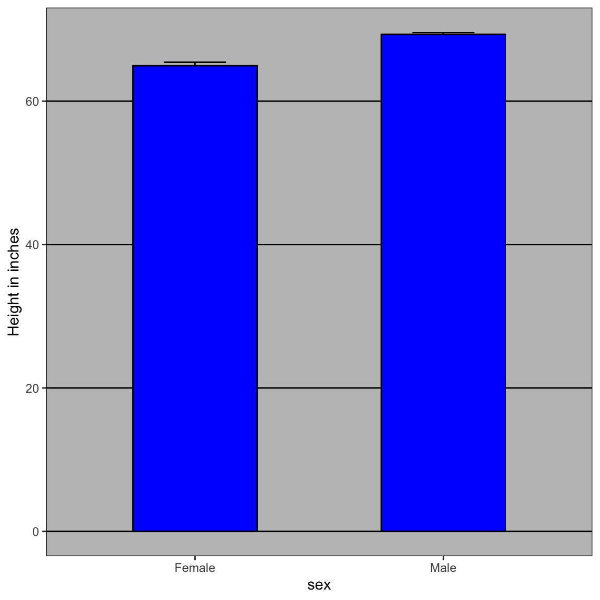
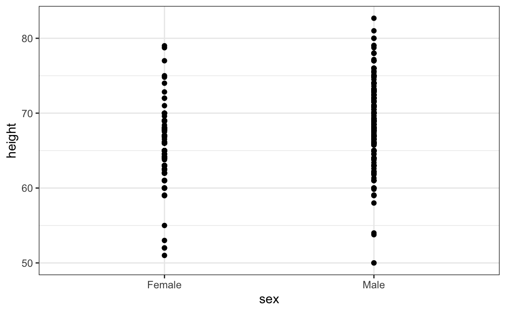

here::here("code", "_common.R") |>
source()
# Load packages
if (!requireNamespace("pacman")) install.packages("pacman")
pacman::p_load(dslabs, ggrepel, stringr)18 Principi della visualizzazione dei dati
“Above all else show the data.”
– Edward R. Tufte, The Visual Display of Quantitative Information (1983)
Introduzione
In questo capitolo vengono introdotti i principi fondamentali della visualizzazione dei dati, accompagnati da esempi concreti e da una discussione sui principali errori da evitare. La visualizzazione non è soltanto un supporto estetico: è uno strumento essenziale per interpretare, comunicare e validare i risultati delle analisi.
Un buon grafico permette di cogliere immediatamente pattern, anomalie e bias che resterebbero nascosti in una semplice tabella di valori. Per chi desidera un approfondimento sistematico, un riferimento utile è il capitolo Data Visualization del libro Introduction to Data Science..
L’ampia disponibilità di dataset complessi e la diffusione di strumenti software sempre più accessibili hanno reso la visualizzazione un passaggio centrale in molti ambiti scientifici e professionali: non solo facilita la comunicazione dei risultati, ma stimola nuove domande e consente di individuare rapidamente errori o anomalie.
Panoramica del capitolo
- Comunicare i risultati basati sui dati.
- Utilizzare
ggplot2per creare grafici personalizzati.
- Riconoscere i limiti di alcuni grafici comunemente utilizzati e comprendere perché evitarli.
18.1 Un’immagine vale più di mille parole
I numeri da soli raramente raccontano una storia chiara. Consideriamo, ad esempio, i dati sugli omicidi con armi da fuoco negli Stati Uniti. Una tabella con i valori grezzi permette di sapere, per ogni stato, popolazione e numero di omicidi. Tuttavia, osservandola è difficile farsi un’idea immediata della distribuzione: quali sono gli stati più popolosi o i meno popolosi? Qual è la dimensione “tipica” di uno stato? Esiste una relazione tra popolazione e numero totale di omicidi? E come si distribuiscono i tassi di omicidio tra le diverse regioni?
head(murders)
#> state abb region population total
#> 1 Alabama AL South 4779736 135
#> 2 Alaska AK West 710231 19
#> 3 Arizona AZ West 6392017 232
#> 4 Arkansas AR South 2915918 93
#> 5 California CA West 37253956 1257
#> 6 Colorado CO West 5029196 65Un grafico, al contrario, rende queste relazioni visibili a colpo d’occhio. Nella figura che segue, la scala logaritmica su entrambi gli assi permette di rappresentare in modo compatto sia gli stati più grandi, come California, Texas e New York, sia quelli con popolazioni molto ridotte, come Wyoming, Vermont o Alaska. Si vede subito che la maggior parte degli stati ha una popolazione compresa tra uno e dieci milioni di abitanti, mentre gli stati più popolosi si collocano nettamente a destra del grafico.
Allo stesso modo, la relazione tra popolazione e numero di omicidi appare chiara: più abitanti significa, in media, più omicidi. Tuttavia, si notano discrepanze: alcuni stati registrano più omicidi del previsto in rapporto alla popolazione, mentre altri ne hanno meno, segnalando l’influenza di fattori ulteriori. Anche la colorazione per regione rivela differenze interessanti: il Sud tende a registrare tassi più elevati, il Nord-Est valori relativamente bassi, l’Ovest mostra una grande variabilità, e il Midwest si colloca in posizione intermedia o bassa.
Il detto “un’immagine vale più di mille parole” trova qui piena conferma: un buon grafico non solo comunica con immediatezza, ma spesso sostituisce lunghe spiegazioni numeriche, guidando lo sguardo verso i pattern più rilevanti e stimolando nuove domande di analisi.
18.2 Codificare i dati attraverso segnali visivi
Ogni visualizzazione si fonda sulla trasformazione dei dati in segnali visivi che il nostro sistema percettivo può elaborare con immediatezza. Gli elementi più comuni sono la posizione, la lunghezza, gli angoli, l’area, la luminosità e la tonalità del colore. Non tutti, però, hanno la stessa efficacia.
Il nostro cervello è particolarmente sensibile alle differenze spaziali: per questo la posizione e la lunghezza sono i canali più potenti per trasmettere informazione quantitativa. Un grafico a barre, ad esempio, permette di confrontare valori in modo rapido e preciso proprio perché sfrutta la lunghezza come segnale visivo. Al contrario, angoli e aree sono molto meno intuitivi: grafici a torta o bolle possono risultare accattivanti, ma spesso portano a errori percettivi, soprattutto quando le differenze tra categorie sono ridotte.
Il colore gioca un ruolo cruciale quando vogliamo distinguere categorie o rappresentare variabili qualitative. È un elemento indispensabile nelle visualizzazioni multidimensionali, come le heatmap, ma deve essere usato con attenzione. Alcune combinazioni, come il rosso e il verde, possono rendere il grafico illeggibile per persone con daltonismo, e in generale una palette mal progettata può distogliere l’attenzione dai contenuti principali.
Infine, è importante distinguere tra strumenti di precisione e strumenti di sintesi. Le tabelle sono ideali quando è necessario leggere valori numerici esatti, mentre i grafici diventano insostituibili di fronte a dataset complessi, perché mettono in evidenza pattern, tendenze e anomalie che difficilmente emergerebbero da un elenco di numeri.
18.3 Scelta della visualizzazione più adeguata
Non esiste una visualizzazione “migliore” in assoluto: la scelta dipende sempre dalla natura dei dati e dallo scopo comunicativo. Se l’obiettivo è confrontare valori quantitativi tra diverse categorie, i grafici a barre o i dot plot risultano particolarmente chiari. Quando invece vogliamo descrivere la distribuzione di una variabile continua, strumenti come l’istogramma, il boxplot o i più moderni raincloud plots permettono di cogliere rapidamente forma, variabilità e presenza di outlier. Per indagare relazioni tra due variabili continue, i grafici di dispersione offrono un’immediatezza che difficilmente può essere sostituita da altre rappresentazioni.
Qualunque sia il tipo di grafico scelto, rimane centrale il principio della chiarezza. Una visualizzazione sovraccarica di dettagli, effetti grafici o decorazioni rischia di distrarre e confondere, mentre una rappresentazione essenziale mette in risalto il messaggio principale e guida lo sguardo verso le informazioni rilevanti. In questo senso, un buon grafico non è solo corretto dal punto di vista tecnico, ma è anche uno strumento di comunicazione efficace.
18.4 Aspetti tecnici della visualizzazione
Una buona visualizzazione non dipende soltanto dalla scelta del tipo di grafico, ma anche da una serie di accorgimenti tecnici che ne determinano chiarezza e correttezza percettiva. Alcune regole, spesso sottovalutate, possono fare la differenza tra un grafico informativo e uno fuorviante.
18.4.1 Inclusione dello zero
Quando la lunghezza viene utilizzata come segnale visivo – come accade nei grafici a barre – l’asse deve sempre partire da zero. In caso contrario, le differenze appariranno artificialmente amplificate, inducendo interpretazioni scorrette. Nei grafici che si basano sulla posizione, come gli scatter plot, questa regola non è altrettanto stringente: qui l’inclusione dello zero dipende piuttosto dal contesto e dal significato delle variabili rappresentate.
18.4.2 Prevenire le distorsioni
Alcuni grafici, come i bubble plot, rischiano di esagerare le differenze fra i valori perché utilizzano l’area come segnale visivo. La superficie di un cerchio cresce infatti con il quadrato del raggio, producendo sproporzioni difficili da cogliere a occhio nudo. Un esempio emblematico è il grafico mostrato durante il Discorso sullo Stato dell’Unione del 2011, in cui il PIL degli Stati Uniti appariva molto più grande di quello cinese o francese. In realtà, la distorsione derivava proprio dall’aver reso il raggio proporzionale al valore, trasformando implicitamente la scala in quadratica. La lezione che se ne ricava è semplice: per confronti accurati, meglio affidarsi a posizione e lunghezza, evitando aree o volumi.
State of the Union

Il confronto sottostante illustra l’impatto della scelta tra raggio e area nella rappresentazione grafica:


Questo caso dimostra chiaramente come, per evitare distorsioni percettive, sia una prassi consolidata ottimizzare la visualizzazione dei dati attraverso confronti basati su lunghezze (o posizioni) anziché su aree o volumi, come evidenziato dall’errata rappresentazione del PIL nel grafico originale.
18.4.3 Ordinamento delle categorie
Nei grafici categoriali, disporre le categorie in ordine alfabetico può sembrare neutrale, ma raramente aiuta la comprensione. Ordinare le categorie in base al valore della variabile di interesse, invece, evidenzia immediatamente pattern e relazioni, rendendo la lettura molto più intuitiva.
18.4.4 Mostrare i dati, non solo le sintesi
I cosiddetti dynamite plots, che riportano medie ed errori standard, sono ancora molto diffusi ma comunicano poco e spesso in modo fuorviante. Guardando una semplice barra con un intervallo di errore, non è possibile capire se i dati siano distribuiti in modo simmetrico, se esistano outlier o se i gruppi si sovrappongano. Visualizzazioni che mostrano i singoli dati – ad esempio dot plot arricchiti da tecniche come jitter e trasparenza – permettono invece di cogliere la variabilità interna, facilitano il confronto e raccontano una storia molto più completa.
Mostrare i dati
Consideriamo il seguente grafico a barre (dynamite plot) che mostra la media (estremità superiore delle barre) e gli errori standard.

Questa visualizzazione offre informazioni limitate:
- Le barre partono da 0, suggerendo erroneamente l’esistenza di esseri umani alti pochi centimetri.
- Non chiarisce se tutti i maschi siano più alti delle femmine o come siano distribuite le altezze.
Un approccio migliore è quello di mostrare i dati:

La visualizzazione di tutti i punti (238 femmine e 812 maschi) rivela l’intervallo dei dati, ma persiste un problema: i punti sovrapposti ostacolano l’interpretazione.
Ottimizzazioni: jitter e trasparenza

Due miglioramenti chiave:
-
Jitter orizzontale: spostamento casuale dei punti per ridurre la sovrapposizione.
- Alpha blending: trasparenza graduale: le aree con più dati appaiono più scure.
Risultati:
- si osserva che i maschi sono in media più alti;
- è chiaro che vi è una grande variabilità e una notevole sovrapposizione tra le due distribuzioni.
In sintesi, strumenti semplici, come jitter e trasparenza, migliorano drasticamente l’interpretazione della distribuzione dei dati.
18.4.5 Confronti coerenti
Quando si confrontano distribuzioni diverse, ad esempio con istogrammi affiancati, è indispensabile utilizzare la stessa scala sugli assi. Differenze apparenti potrebbero dipendere soltanto da un’incoerenza di rappresentazione. Anche l’allineamento dei grafici gioca un ruolo importante: disporli in verticale o in orizzontale con assi coerenti rende il confronto immediato e riduce il rischio di fraintendimenti.
Facilitare i confronti
Poiché ci sono molti punti, è più efficace mostrare la distribuzione dei dati anziché i singoli valori. Per questo motivo, utilizziamo istogrammi separati per ciascun gruppo:

Tuttavia, in questo grafico non è immediatamente evidente che, in media, gli uomini siano più alti delle donne. Per accorgersene, bisogna osservare con attenzione e notare che l’asse x del grafico maschile copre un intervallo di valori più ampio. Un principio fondamentale nella comparazione di dati tra due grafici è mantenere le stesse scale sugli assi.
Negli istogrammi, l’altezza media si riflette in spostamenti orizzontali: valori più bassi a sinistra, valori più alti a destra. Allineare i grafici in verticale aiuta a visualizzare meglio questa differenza quando gli assi sono coerenti:

Questo secondo grafico rende molto più evidente che, in media, gli uomini sono più alti delle donne.
18.4.6 Trasformazioni logaritmiche
Molti dati reali coprono ordini di grandezza molto ampi. In questi casi, una scala lineare comprime la maggior parte delle osservazioni e rende invisibili le differenze più sottili. Le trasformazioni logaritmiche sono uno strumento efficace per restituire leggibilità a distribuzioni fortemente asimmetriche. Altre trasformazioni, come la logistica o la radice quadrata, sono utili rispettivamente per rappresentare rapporti di probabilità o stabilizzare la varianza in dati di conteggio. La scelta della trasformazione non è mai neutrale, ma può illuminare pattern altrimenti nascosti.
Trasformazioni logaritmiche
Consideriamo questo grafico a barre, che mostra la popolazione media dei paesi di ciascun continente nel 2015:
A prima vista, sembrerebbe che i paesi dell’Asia siano molto più popolosi rispetto a quelli degli altri continenti. Tuttavia, applicando il principio che ci chiede di mostrare i dati, notiamo rapidamente che questa differenza è dovuta alla presenza di due paesi con una popolazione estremamente elevata, presumibilmente India e Cina:
Consideriamo ora come la trasformazione logaritmica possa migliorare la visualizzazione di dati distribuiti in modo asimmetrico (right-skewed). Esistono anche altre trasformazioni utili, come la logistica (logit), impiegata per interpretare variazioni nei rapporti di probabilità (odds), e la radice quadrata (sqrt), spesso usata per stabilizzare la varianza nei dati basati su conteggi.
Nel caso della popolazione dei paesi, la distribuzione è fortemente asimmetrica: la maggior parte delle nazioni ha una popolazione relativamente piccola, mentre poche hanno numeri estremamente elevati. Come mostrato nel boxplot precedente, questa disparità comprime la maggior parte dei dati in una piccola area del grafico, lasciando molto spazio inutilizzato. Questo rende difficile cogliere le differenze tra la maggior parte dei paesi.
Una trasformazione logaritmica migliora la leggibilità di uno scatter plot quando i dati mostrano una forte asimmetria. Qui, applicando questa tecnica alle popolazioni nazionali, otteniamo una rappresentazione molto più chiara e informativa. Di seguito, confrontiamo il barplot originale con un boxplot in cui l’asse y è stato trasformato con il logaritmo:
Grazie a questa trasformazione, scopriamo che la mediana della popolazione nei paesi africani è in realtà più alta rispetto a quella dei paesi asiatici, un’informazione che il grafico iniziale non rendeva evidente.
18.4.7 Codifica di variabili aggiuntive
Quando si vogliono rappresentare più di due variabili nello stesso grafico, si possono sfruttare ulteriori canali visivi come colore, forma o dimensione dei punti. È però necessario bilanciare informazione e leggibilità: troppe codifiche simultanee generano confusione. Inoltre, la scelta delle palette cromatiche deve garantire accessibilità, ad esempio evitando combinazioni problematiche per persone con daltonismo.
Codificare una terza variabile
Esaminiamo la relazione tra sopravvivenza infantile e reddito medio. Il grafico seguente rappresenta questa relazione includendo tre variabili aggiuntive: appartenenza all’OPEC, regione geografica e popolazione.

Le variabili categoriali sono rappresentate attraverso il colore e la forma dei punti. La forma può essere modificata utilizzando l’argomento shape.
18.4.8 Evitare il 3D superfluo
Grafici tridimensionali, come pie chart o barre in prospettiva, attirano l’occhio ma raramente aggiungono informazione. Anzi, introducono distorsioni che complicano la lettura. Nella maggior parte dei casi, una rappresentazione bidimensionale è più chiara, più fedele e più efficace.
18.4.9 Cifre significative
Mostrare un numero eccessivo di decimali non aumenta la precisione, ma rischia di appesantire la lettura. Una o due cifre significative sono quasi sempre sufficienti per trasmettere il messaggio in modo accurato e comprensibile.
18.4.10 Conoscere il pubblico
Infine, una regola trasversale: ogni visualizzazione deve tenere conto del pubblico di riferimento. Un grafico pensato per un’analisi interna può includere dettagli tecnici e livelli di complessità elevati; al contrario, quando il pubblico non è specializzato, è preferibile semplificare, ridurre il rumore visivo e accompagnare la rappresentazione con spiegazioni chiare.
18.5 Introduzione a ggplot2
In R esistono diversi strumenti per creare grafici, ma il pacchetto ggplot2 si distingue per flessibilità e chiarezza. È diventato lo standard per la visualizzazione dei dati in molti ambiti scientifici, inclusa la psicologia, perché consente di tradurre un dataset complesso in rappresentazioni immediate e leggibili.
18.5.1 Perché usare ggplot2?
Immaginiamo di voler analizzare i livelli di ansia di un gruppo di studenti prima di un esame. I dati raccolti in una tabella ci danno informazioni preziose, ma difficili da cogliere a colpo d’occhio. Con un grafico, invece, possiamo visualizzare subito quali studenti mostrano livelli di ansia particolarmente elevati e se l’ansia tende a variare in funzione di caratteristiche come l’intolleranza all’incertezza (IU).
Per illustrare le potenzialità di ggplot2, costruiamo un piccolo dataset simulato:
set.seed(123)
n <- 200
gender <- sample(c(0, 1), n, replace = TRUE)
anxiety <- rnorm(n, mean = 50 + 10 * gender, sd = 10)
study_hours <- rnorm(n, mean = 30 - 0.3 * anxiety, sd = 5)
IU <- rnorm(n, mean = 50 + 0.5 * anxiety, sd = 10)
df <- data.frame(
id = 1:n,
gender = factor(gender, levels = c(0, 1), labels = c("Male", "Female")),
anxiety = round(anxiety, 1),
study_hours = round(study_hours, 1),
IU = round(IU, 1)
)
head(df)
#> id gender anxiety study_hours IU
#> 1 1 Male 42.9 13.6 65.4
#> 2 2 Male 52.6 10.5 66.3
#> 3 3 Male 47.5 11.0 84.0
#> 4 4 Female 56.5 7.8 85.8
#> 5 5 Male 40.5 15.7 55.2
#> 6 6 Female 59.5 13.8 78.8
18.5.2 La logica di ggplot2
Alla base di ogni grafico con ggplot2 ci sono tre elementi fondamentali:
- i dati, cioè il dataset da rappresentare;
- le geometrie, ossia il tipo di grafico scelto (punti, barre, linee, boxplot);
- la mappatura estetica, che stabilisce come i dati vengono tradotti in segnali visivi (posizione sugli assi, colore, forma, dimensione).
Questa struttura rende il pacchetto molto intuitivo: basta dire a ggplot2 quali dati usare, come rappresentarli e con quali convenzioni grafiche.
18.5.3 Un primo esempio
Supponiamo di voler capire se esiste una relazione tra ore di studio e livelli di ansia. Possiamo costruire un semplice grafico a dispersione:
library(ggplot2)
df |>
ggplot(aes(x = study_hours, y = anxiety)) +
geom_point()In questo codice stiamo dicendo a ggplot2 di prendere come riferimento il dataset df, di mettere le ore di studio sull’asse X, i livelli di ansia sull’asse Y e di rappresentare ogni osservazione con un punto.
18.5.4 Personalizzare il grafico
Un aspetto importante di ggplot2 è la possibilità di arricchire facilmente la rappresentazione. Aggiungiamo, per esempio, un colore che distingua maschi e femmine, rendiamo i punti più visibili e inseriamo un titolo e delle etichette agli assi:
df |>
ggplot(aes(x = study_hours, y = anxiety, color = gender)) +
geom_point(size = 3) +
labs(
x = "Ore di studio",
y = "Livello di ansia",
color = "Genere"
)Il risultato è un grafico più leggibile, in cui la distinzione per genere appare immediatamente chiara.
18.5.5 Altri esempi
Con gli stessi dati possiamo costruire grafici diversi, ciascuno utile a rispondere a domande specifiche. Per esplorare la distribuzione dell’ansia, ad esempio, un istogramma è la scelta naturale:
df |>
ggplot(aes(x = anxiety)) +
geom_histogram(binwidth = 5) +
labs(x = "Livello di ansia", y = "Frequenza")Se invece vogliamo confrontare i livelli di ansia tra maschi e femmine, un boxplot mette in evidenza la mediana, la variabilità e la presenza di eventuali valori estremi:
df |>
ggplot(aes(x = gender, y = anxiety, fill = gender)) +
geom_boxplot(alpha = 0.7) +
labs(x = "Genere", y = "Livello di ansia") +
theme(legend.position = "none")
In sintesi, con pochi comandi, ggplot2 consente di costruire grafici chiari e informativi. In psicologia, dove spesso si lavora con dataset complessi, è uno strumento prezioso per trasformare numeri in intuizioni: una buona visualizzazione permette non solo di comunicare risultati, ma anche di stimolare nuove domande di ricerca.
Riflessioni conclusive
Una visualizzazione ben progettata ha il potere di trasformare dati complessi in messaggi immediati, riducendo il carico cognitivo e facilitando decisioni più consapevoli. Disegnare un grafico non significa solo scegliere un formato piacevole: implica assumersi la responsabilità di comunicare i risultati in modo corretto, evitando di indurre interpretazioni fuorvianti.
Per raggiungere questo obiettivo, occorre innanzitutto essere chiari sul messaggio che si vuole trasmettere. Un buon grafico è costruito intorno a una domanda precisa e guida lo sguardo del lettore verso gli elementi più rilevanti. Colori, forme e dimensioni non vanno scelti per decorare, ma per orientare l’attenzione: una palette limitata, ben calibrata e accessibile è spesso più efficace di combinazioni cromatiche elaborate. Allo stesso modo, titoli ed etichette devono essere semplici e intuitivi, evitando abbreviazioni o tecnicismi che potrebbero confondere.
È importante anche saper gestire la densità dell’informazione. Quando i dati sono numerosi, tecniche come la trasparenza, il jitter o un eventuale sottocampionamento aiutano a prevenire il sovraccarico visivo e rendono le distribuzioni leggibili. Mostrare i dati grezzi, quando possibile, arricchisce l’interpretazione e riduce il rischio che le sintesi statistiche nascondano pattern interessanti.
Alcune buone pratiche ricorrono in quasi tutte le situazioni: ordinare le categorie in base ai valori, e non alfabeticamente, facilita i confronti; mantenere assi coerenti rende più immediata la comparazione tra grafici; partire da zero negli assi dei barplot evita distorsioni nelle proporzioni; usare trasformazioni logaritmiche quando i valori coprono ordini di grandezza molto diversi permette di restituire visibilità anche ai dati più piccoli.
Altre accortezze riguardano la scelta delle codifiche visive. L’aggiunta di variabili tramite colore, forma o dimensione può arricchire un grafico, ma solo se mantiene un equilibrio tra informazione e leggibilità. Le rappresentazioni tridimensionali, al contrario, raramente offrono un reale vantaggio: sono spesso più fuorvianti che utili. Infine, i numeri stessi vanno comunicati con sobrietà: un eccesso di decimali non rende il dato più preciso, ma soltanto più difficile da leggere.
Tutte queste regole devono sempre essere rapportate al pubblico a cui ci si rivolge. In un’analisi tecnica interna è possibile includere dettagli complessi, mentre per un pubblico non specializzato occorre semplificare, spiegare e accompagnare la visualizzazione con un linguaggio accessibile. In definitiva, progettare una buona visualizzazione non significa soltanto “disegnare un grafico”, ma costruire un ponte tra i dati e chi li interpreta, con l’obiettivo di rendere la conoscenza condivisibile e utile.
Bibliografia
Healy, K. (2018). Data visualization: a practical introduction. Princeton University Press.
Irizarry, R. A. (2024). Introduction to Data Science: Data Wrangling and Visualization with R. CRC Press.
Wickham, H., Çetinkaya-Rundel, M., & Grolemund, G. (2023). R for data science. " O’Reilly Media, Inc.".
Wilke, C. O. (2019). Fundamentals of data visualization: a primer on making informative and compelling figures. O’Reilly Media.